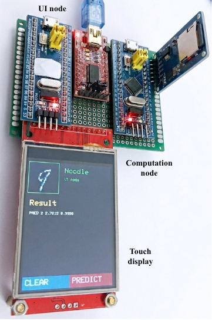

Lenet 5 bluepill
LeNet-5-28×28 on STM32 Blue Pill
This example evaluates a LeNet-5 inference pipeline on an STM32F103 Blue Pill. The goal is to show how Noodle can run a model whose parameters are too large for the microcontroller's internal flash, while still keeping intermediate activations in SRAM when they fit.

The STM32F103 Blue Pill is a constrained target:
Flash : 64 KB nominal on common STM32F103C8 boards
SRAM : 20 KB
````
The LeNet-5 parameter set is much larger than the available flash when represented as `float32`. Therefore, this implementation stores weights and biases on an external SD card. Activations are kept in SRAM to avoid unnecessary SD-card traffic.
In this implementation:
* weights and biases are stored as binary `.bin` files on the SD card,
* convolution and fully connected activations are stored in SRAM,
* the SD card is used only as parameter storage,
* and inference is executed layer by layer using Noodle.
The use of binary files is important. Text files are easier to inspect, but they require ASCII parsing on the microcontroller. Binary files store raw `float32` values directly, making them more suitable for repeated embedded inference.
---
## Why Use an SD Card?
The SD card is required because the full `float32` LeNet-5 parameter set is too large for the internal flash of a typical Blue Pill.
Approximate parameter sizes are:
| Layer | Parameter shape | Number of floats | Size |
| ------------- | ---------------: | ---------------: | ------: |
| Conv1 weights | `6 × 1 × 5 × 5` | 150 | 600 B |
| Conv1 bias | `6` | 6 | 24 B |
| Conv2 weights | `16 × 6 × 5 × 5` | 2,400 | 9.6 KB |
| Conv2 bias | `16` | 16 | 64 B |
| FC1 weights | `400 × 120` | 48,000 | 192 KB |
| FC1 bias | `120` | 120 | 480 B |
| FC2 weights | `120 × 84` | 10,080 | 40.3 KB |
| FC2 bias | `84` | 84 | 336 B |
| FC3 weights | `84 × 10` | 840 | 3.36 KB |
| FC3 bias | `10` | 10 | 40 B |
The total parameter count is:
```text
61,706 float32 values
At 4 bytes per value:
61,706 × 4 = 246,824 bytes ≈ 241 KB
This is only the parameter size. It does not include program code, the Noodle library, the SdFat library, serial communication code, stack, heap, or runtime buffers. Therefore, storing all parameters as const arrays in flash is not feasible on a typical STM32F103C8 Blue Pill. Even a 128 KB variant would not comfortably hold the full float32 model together with the firmware.
The SD card solves this by acting as external parameter storage.
Storage Strategy
The optimized Blue Pill implementation uses hybrid memory placement:
Weights and biases → SD card
Activations → SRAM
This is possible because the activation tensors are much smaller than the parameter set.
The largest activation buffers are:
Input image : 28 × 28 = 784 floats = 3136 B
Conv1 + Pool1 : 14 × 14 × 6 = 1176 floats = 4704 B
Conv2 + Pool2 : 5 × 5 × 16 = 400 floats = 1600 B
Scratch plane : 28 × 28 = 784 floats = 3136 B
RX buffer : 784 bytes
The explicit runtime buffers require about:
13.36 KB
This fits inside the 20 KB SRAM of the Blue Pill, while still leaving space for stack, heap metadata, SD/SPI objects, and local variables.
The key point is that the full convolution outputs do not need to be materialized. Noodle applies internal pooling during convolution, so Conv1 directly produces the pooled 14 × 14 × 6 output instead of storing the larger unpooled 28 × 28 × 6 tensor.
Layer-by-Layer Data Flow
The SRAM-activation implementation uses the following placement:
| Step | Operation | Input | Output | Parameters | Notes |
|---|---|---|---|---|---|
| 1 | Conv1 + Pool | IMG in SRAM |
ACT1 in SRAM |
w01.bin, b01.bin on SD |
Produces 14 × 14 × 6 |
| 2 | Conv2 + Pool | ACT1 in SRAM |
ACT2 in SRAM |
w02.bin, b02.bin on SD |
Produces 5 × 5 × 16 |
| 3 | Flatten | ACT2 in SRAM |
IMG in SRAM |
— | Produces 400-float vector |
| 4 | FC1 | IMG in SRAM |
ACT1 in SRAM |
w03.bin, b03.bin on SD |
Produces 120-float vector |
| 5 | FC2 | ACT1 in SRAM |
IMG in SRAM |
w04.bin, b04.bin on SD |
Produces 84-float vector |
| 6 | FC3 + Softmax | IMG in SRAM |
ACT2 in SRAM |
w05.bin, b05.bin on SD |
Produces 10-class output |
The complete flow is:
IMG
↓ Conv1 + Pool
ACT1
↓ Conv2 + Pool
ACT2
↓ Flatten
IMG
↓ FC1
ACT1
↓ FC2
IMG
↓ FC3 + Softmax
ACT2
This placement avoids writing intermediate activations such as out1.bin and out2.bin to the SD card. The SD card is used only for the model parameters.
Noodle Implementation Sketch
The optimized call sequence is:
// Conv activations stay in SRAM.
// Conv weights are read from SD.
V = noodle_conv_float(IMG, 1, 6,
ACT1, 28,
cnn1, pool, NULL);
V = noodle_conv_float(ACT1, 6, 16,
ACT2, V,
cnn2, pool, NULL);
// Flattened activation stays in SRAM.
V = noodle_flat(ACT2, IMG, V, 16);
// FC activations stay in SRAM.
// FC weights are read from SD.
V = noodle_fcn(IMG, V, 120, ACT1, fcn1, NULL);
V = noodle_fcn(ACT1, V, 84, IMG, fcn2, NULL);
V = noodle_fcn(IMG, V, 10, ACT2, fcn3, NULL);
This version keeps the activations entirely in SRAM while streaming the large weights from SD card files.
SD Card Interface
The Blue Pill inference node uses an SD card connected through SPI2:
SD CLK → PB13
SD MISO → PB14
SD MOSI → PB15
SD CS → PB12
SD 3V3 → 3.3V
SD GND → GND
In the tested PlatformIO STM32duino setup, the SD card is initialized as an explicit SPI2 object:
static const uint8_t SD_CS = PB12;
SPIClass SPI_SD(PB15, PB14, PB13, PB12); // MOSI, MISO, SCK, SS
if (!noodle_fs_init(SD_CS, SPI_SD, 12)) {
Serial.println(F("noodle_fs_init FAILED"));
while (true) delay(1000);
}
The tested setup was stable at 12 MHz SPI. Higher SPI speeds may depend on wiring quality and the SD module.
Benchmark Result
The SRAM-activation version produced the following representative layer timings:
| Layer | Time |
|---|---|
| Conv1 + Pool | 0.3530 s |
| Conv2 + Pool | 0.8165 s |
| Flatten | 0.0001 s |
| FC1 | 1.0686 s |
| FC2 | 0.4267 s |
| FC3 + Softmax | 0.0558 s |
| Total | 2.7212 s |
This result shows that eliminating SD-backed intermediate activations greatly reduces latency. The remaining cost is dominated by the FC layers, especially FC1, because the large FC weight matrices are still streamed from SD.
Why This Matters
This example demonstrates the central idea behind Noodle:
Large tensors that do not fit on-chip should be stored externally.
Small tensors that fit in SRAM should stay in SRAM.
For the Blue Pill LeNet-5 example:
Weights and biases → SD card
Activations → SRAM
Final output → SRAM
The SD card makes it possible to run a full float32 LeNet-5 model whose parameters require about 241 KB. The Blue Pill cannot store those parameters in internal flash and cannot load them fully into SRAM. However, by streaming weights from SD while keeping activations in RAM, Noodle can still execute the model.
This differs from a conventional in-memory inference engine. In TensorFlow Lite Micro, the model is normally stored as a memory-addressable flat buffer, often compiled into flash as a C array, and the tensor arena must fit in SRAM. That approach works well when the quantized model and tensor arena fit on-chip. In contrast, this Noodle example targets the case where the float32 model parameters exceed the internal flash capacity of the microcontroller.
Why Not Just Quantize?
Quantization is important for TinyML deployment. If the model can be quantized to int8 and the resulting model plus tensor arena fits into on-chip flash and SRAM, then a conventional in-memory inference engine such as TFLite Micro is usually the better choice for speed.
However, this example explores a different constraint: running a float32 LeNet-5 model whose parameter set alone is larger than the internal flash of the target MCU. In this case, the SD card is not used to compete with quantization. It is used to provide external parameter storage.
Noodle and quantization are complementary:
Quantization reduces tensor size.
Noodle controls where tensors live.
A quantized Noodle backend could further reduce SD traffic and SRAM usage in future work, while preserving the same memory-placement idea.
Summary
This example demonstrates SD-backed LeNet-5 inference on an STM32F103 Blue Pill.
The main findings are:
- the complete
float32parameter set is about 241 KB, - this is too large for the internal flash of a typical Blue Pill,
- SD card storage allows the full model weights to be used,
- all intermediate activations can fit in SRAM when internal pooling is used,
- keeping activations in SRAM reduces SD traffic significantly,
- and the measured inference time is about 2.72 s.
In short, this example shows that Noodle can run a model that exceeds the on-chip memory capacity of the microcontroller by explicitly controlling where each tensor lives.